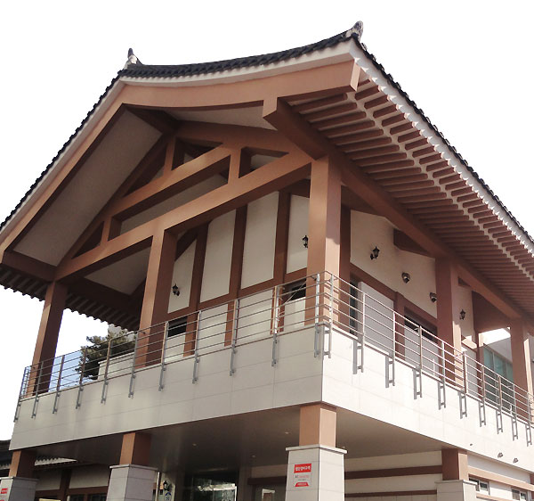

대전무형문화재전수회관
소개

대전무형문화재전수회관은 대전광역시 무형문화재 전승과 육성을 위해 2009년 4월 15일에 개관하였습니다.
무형문화재란 과거에 흔히 ‘인간문화재’라 불렸던 것으로 연극, 음악, 무용, 놀이와 의식, 무예, 공예기술, 음식 등 ‘무형’의 문화적 소산 중에서 예술적·학술적 가치가 큰 것들을 물질적으로 정지시켜 보존할 수 없는 문화재 전반을 말합니다.
현재 대전광역시 지정 무형문화재는 웃다리농악 등 총 23개 종목으로 다른 시도에 비해 많은 무형문화재를 보유하고 있습니다. 또한 그 분야도 대전 전래의 예능, 민속신앙, 조각공예 등 매우 다양합니다.
대전무형문화재전수회관은 대전무형문화재 예능 11종목을 전수, 보존하며 교육, 공연, 행사 등 다양한 프로그램으로 시민 전통문화 향유기회를 확대해 나가고 있습니다.
주요사업
안내지도